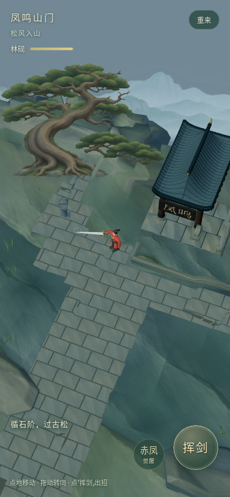
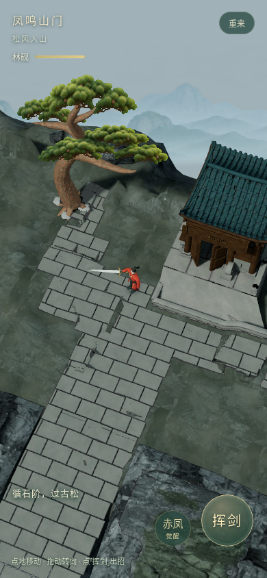
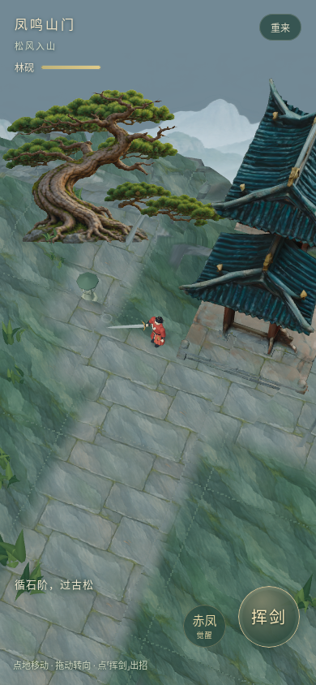
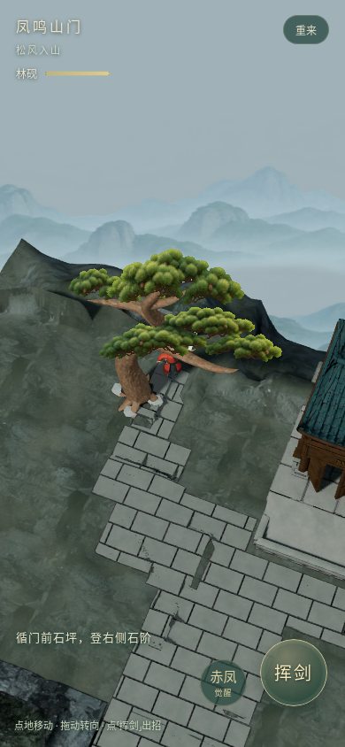
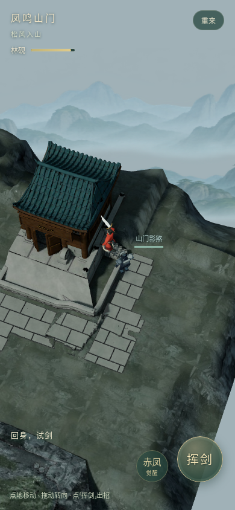
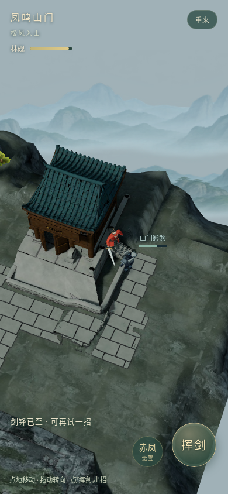

以下为390×844原游戏镜头，云Linux WebKit/WPE软件渲染。不是iPhone/微信真机。
实际游戏帧率 18.44 FPS；录像1倍速、25FPS编码、无插帧。正常玩家UI保留，调试面板隐藏。
每张保持390 CSS像素；横向滑动对照。H36/H35机位与站位完全一致。H31仅保留旧版贴地高度差约0.01272米。






完整走位/帧率数据 · 实际遮挡与技能/重来 · 6项载入/恢复检查 · 4048点踏面验收
本轮主树/门楼与光照已明显替换；地形融合与整体材质协调仍弱于参考完成度，未宣称美术全通过。